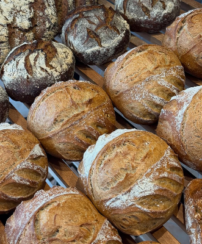
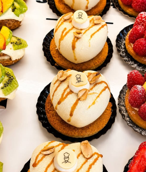
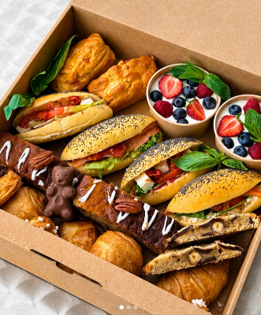

Notre engagement dans la vie locale
Du pain sur la planche, c'est aussi une envie de rendre à Quimper une partie de ce qu'elle nous donne : nous soutenons des clubs et des associations qui font vivre la ville.

Aux côtés d'un club de sport quimpérois
Nous sommes fiers de sponsoriser un club de sport local, en fournissant pains et viennoiseries lors des événements et en soutenant ses actions auprès des jeunes licenciés. Le sport et la boulangerie partagent les mêmes valeurs : effort, régularité et plaisir du collectif.

Un coup de main aux associations locales
Kermesses, tombolas, marchés de producteurs, actions caritatives : nous aimons participer à la vie associative de Quimper en offrant pains, viennoiseries et pâtisseries pour animer ces temps de partage.

Parce qu'une boulangerie, ça se vit en famille
Justine et Benoist tiennent à leur ville, et c'est tout naturellement qu'ils souhaitent la voir grandir avec eux. S'engager auprès des clubs et associations, c'est une manière simple de dire merci à celles et ceux qui font vivre notre territoire.
Parlons de votre association ou de votre club
Vous organisez un événement associatif ou sportif et souhaitez un partenariat ou une contribution en produits ? Contactez-nous, nous étudions chaque demande avec plaisir.